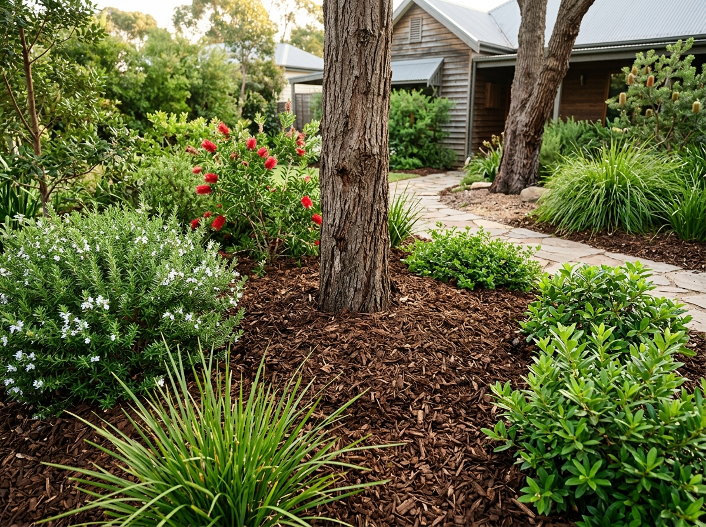

Guides
How Much Mulch Do I Need? Coverage Guide for Sydney Gardens

Ordering mulch is one of those jobs where guessing gets expensive in both directions. Order too little and you're paying for a second delivery; order too much and you've got a pile on the driveway with nowhere to go. The good news: working out how much mulch you need takes about two minutes with a tape measure.
The quick answer
At the recommended depth of 75mm, one cubic metre of mulch covers roughly 13 square metres. At 50mm, it stretches to about 20m². Most of our mulches ship as 1-tonne bulk bags, and for typical hardwood and bark products a tonne works out close to a cubic metre and a half, depending on moisture and how coarse the chip is.
Coverage table
| Area to cover | 50mm depth (light top-up) | 75mm depth (recommended) | 100mm depth (heavy suppression) |
|---|---|---|---|
| 10m² | 0.5m³ | 0.75m³ | 1m³ |
| 20m² | 1m³ | 1.5m³ | 2m³ |
| 40m² | 2m³ | 3m³ | 4m³ |
| 60m² | 3m³ | 4.5m³ | 6m³ |
| 100m² | 5m³ | 7.5m³ | 10m³ |
To measure your area: pace out length × width for each garden bed and add them together. For odd shapes, break the bed into rough rectangles — close enough is fine, mulch is forgiving.
Prefer to let a calculator do it? Our coverage calculator does the maths for every product we stock.
Why depth matters more than people think
Mulch spread thinner than 50mm looks tidy for about three weeks — then Sydney sun and weeds get through it. At 75mm you get genuine weed suppression, real moisture retention through summer, and the layer lasts a full season or more. Going past 100mm doesn't add much benefit and can stop light rain reaching the soil, so save your money.
Which mulch for which job?
- Premium Hardwood Chip — the workhorse. Slow to break down, holds its colour, good under established trees and shrubs and along fence lines.
- Woodlands Blend — a mixed natural look that settles into garden beds beautifully. Popular for native gardens.
- Pine Bark — fine texture and rich colour, the pick for display beds and around feature planting.
Getting it delivered
Everything ships from our Wetherill Park yard in 1-tonne bulk bags, craned off the truck where access allows. Delivery is quoted per job based on your suburb and load — call 0433 132 406 or request a quote and we'll confirm the cost before anything is dispatched. If you're doing several beds or a whole property, ask about multi-bag pricing.
Need materials for this project?
Premium soil, mulch, pebbles and sand delivered across Sydney — delivery quoted per job.